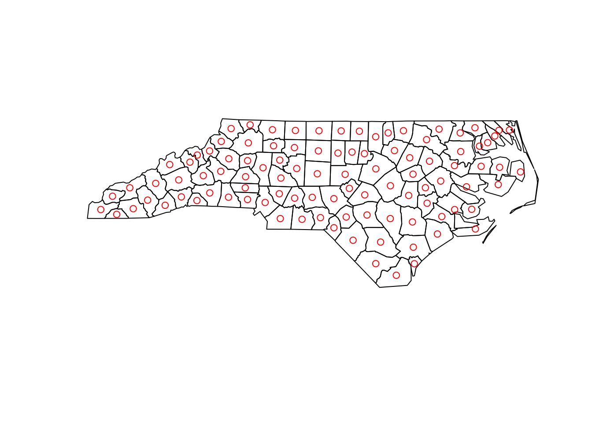
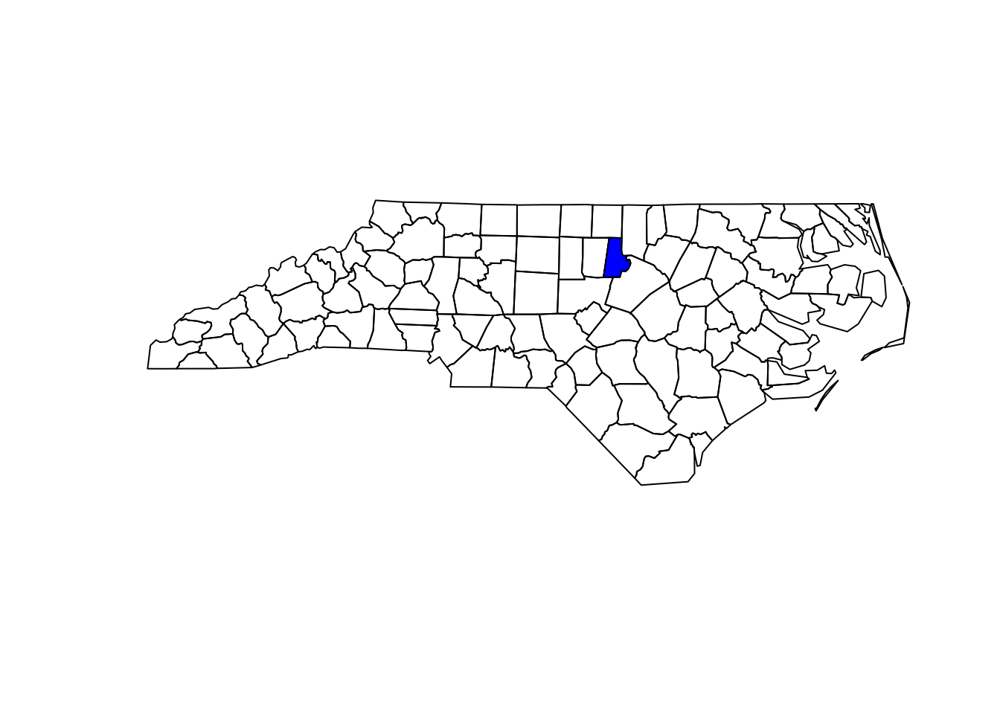
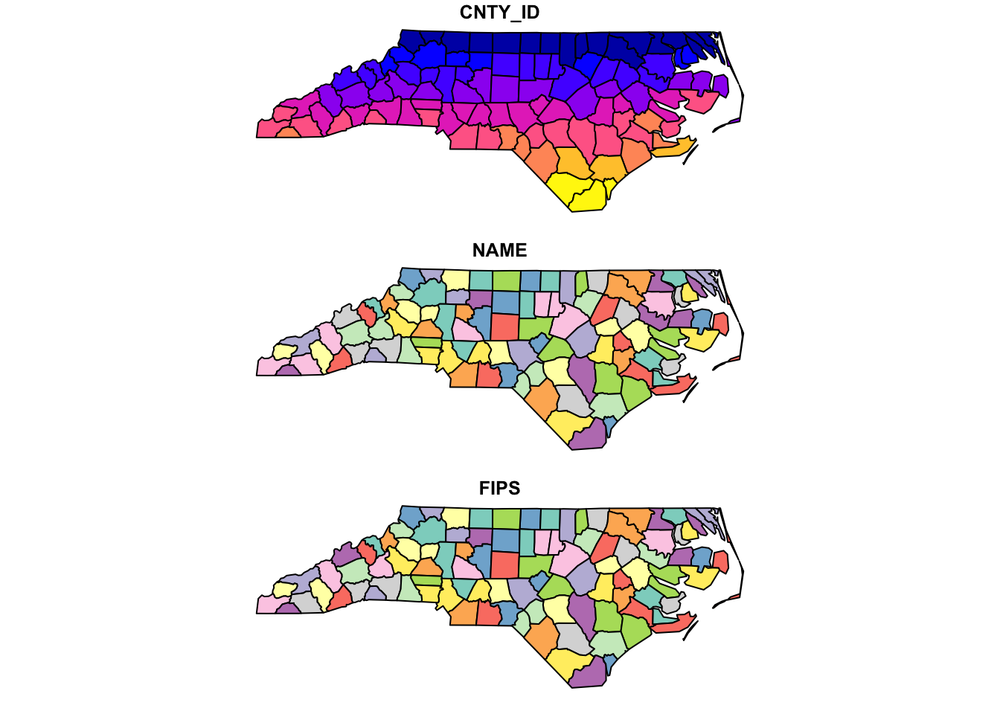

Warning: package 'sf' was built under R version 4.4.1Intro to Vector Data
Today we’ll build on the introductory discussion we were having about vector operations and the sf package. We’ll build a few vectors from scratch and then move on to explore a broader suite of common vector operations implemented by the sf package.
A reminder about vector geometries in R
You’ll recall that the sf package organizes the different types of vectors (e.g., points, lines, polygons) in to a hierarchical structure organized by complexity of geometries contained within an R object. For example, a single point will be a POINT, several points will be a MULTIPOINT, and an object containing points, polygons, and lines will be a GEOMETRYCOLLECTION. We need to be aware of what types of geometries and objects we have becasue some operations are restricted to particular types of objects or geometries as indicated by errors that read:
Error in UseMethod("st_crs<-") : no applicable method for 'st_crs<-' applied to an object of class "c('XY', 'POINT', 'sfg')"
which indicates that the function (st_crs) does not have a method defined for the type of object it’s being applied to. Note that the function inside UseMethod will be replaced by whichever function you’re attempting to apply to your object and the object of class component will vary based on the function and the object class.
| type | description |
|---|---|
POINT |
single point geometry |
MULTIPOINT |
set of points |
LINESTRING |
single linestring (two or more points connected by straight lines) |
MULTILINESTRING |
set of linestrings |
POLYGON |
exterior ring with zero or more inner rings, denoting holes |
MULTIPOLYGON |
set of polygons |
GEOMETRYCOLLECTION |
set of the geometries above |
As is, these geometries are built on vertices with coordinates that are based on the Cartesian plane and thus are “spatial”, but not georeferenced or geographic. In order to convert these sf geometries to a geogrphic object (i.e., one with a CRS and whose location depicts and actual spot on the earth’s surface), we use st_sfc() to create a simple feature geography list column (see ?st_sfc for an example of this workflow).
Conventions in sf and the tidyverse
One of the benefits of the sf package is that it is designed to interface with the tidyverse suite of packages. One of the appealing parts of working with tidyverse packages is that they share an underlying philosophy, data structure, and grammar. This can make life a lot easier as you move from getting your data into R, constructing a set of covariates (including those derived from spatial data), analyzing, and plotting (or mapping) those data. People have strong opinions about the tidyverse, but I find it to be an (eventually) useful way for people to gain some intuition for working in R. One of the grammatical conventions used in the tidyverse suite of packages is the use _ in function calls (this is known as snake case should you ever need to know that at a dinner party). The _ is typically used to separate the verb in a function call from its predicate. For example, bind_rows() in the dplyr package “binds” (the verb) rows (the predicate) wheras bind_cols() binds columns. For the sf package it’s slightly different in that most of the functions begin with a st_ or sf_ prefix to indicate that the function is designed to work on spatial objects followed by a word (or words) describing what the operation does (e.g., st_centroid() returns a MULTIPOINT object with each point located at the centroid of a polygon). We can classify these functions based on what they are expected to return:
Predicates: evaluate a logical statement asserting that a property is
TRUEMeasures: return a numeric value with units based on the units of the CRS
Transformations: create new geometries based on input geometries.
We can also distinguish these functions based on how many geometries that operate on:
- Unary: operate on a single geometry at a time (meaning that if you have a
MULTI*object the function works on each geometry individually) - Binary: operate on pairs of geometries
- n-ary: operate on sets of geometries
We’ll focus on the unary operators for now, but the binary and n-ary operators will become more important as we move to develop databases for spatial analysis.
Unary predicates
Unary predicates are helpful ‘checks’ to make sure the object you are working with has the properties you might expect. Are the geometries valid? Is the data projected? Because we are asking a set of TRUE/FALSE questions, these functions are specified as st_is_:
| predicate | asks… |
|---|---|
simple |
is the geometry self-intersecting (i.e., simple)? |
valid |
is the geometry valid? |
empty |
is the geometry column of an object empty? |
longlat |
does the object have geographic coordinates? (FALSE if coords are projected, NA if no crs) |
is(geometry, class) |
is the geometry of a particular class? |
Code
nc <- st_read(system.file("shape/nc.shp", package="sf"))Reading layer `nc' from data source
`/Library/Frameworks/R.framework/Versions/4.4-x86_64/Resources/library/sf/shape/nc.shp'
using driver `ESRI Shapefile'
Simple feature collection with 100 features and 14 fields
Geometry type: MULTIPOLYGON
Dimension: XY
Bounding box: xmin: -84.32385 ymin: 33.88199 xmax: -75.45698 ymax: 36.58965
Geodetic CRS: NAD27Code
st_is_longlat(nc)[1] TRUECode
st_is_valid(nc) [1] TRUE TRUE TRUE TRUE TRUE TRUE TRUE TRUE TRUE TRUE TRUE TRUE TRUE TRUE TRUE
[16] TRUE TRUE TRUE TRUE TRUE TRUE TRUE TRUE TRUE TRUE TRUE TRUE TRUE TRUE TRUE
[31] TRUE TRUE TRUE TRUE TRUE TRUE TRUE TRUE TRUE TRUE TRUE TRUE TRUE TRUE TRUE
[46] TRUE TRUE TRUE TRUE TRUE TRUE TRUE TRUE TRUE TRUE TRUE TRUE TRUE TRUE TRUE
[61] TRUE TRUE TRUE TRUE TRUE TRUE TRUE TRUE TRUE TRUE TRUE TRUE TRUE TRUE TRUE
[76] TRUE TRUE TRUE TRUE TRUE TRUE TRUE TRUE TRUE TRUE TRUE TRUE TRUE TRUE TRUE
[91] TRUE TRUE TRUE TRUE TRUE TRUE TRUE TRUE TRUE TRUEUnary measures
Measures return a quantity that describes the geometry
| measure | returns |
|---|---|
dimension |
0 for points, 1 for linear, 2 for polygons, possibly NA for empty geometries |
area |
the area of a geometry |
length |
the length of a linear geometry |
distance is a binary measure that returns the distance between pairs of geometries either within a single object or between features in multiple objects
Code
head(st_area(nc))Units: [m^2]
[1] 1137107793 610916077 1423145355 694378925 1520366979 967504822Code
st_distance(nc)[1:5,1:5]Units: [m]
[,1] [,2] [,3] [,4] [,5]
[1,] 0.0 0.0 25591.8 439493.26 299049.94
[2,] 0.0 0.0 0.0 408416.68 268284.09
[3,] 25591.8 0.0 0.0 366648.94 226461.23
[4,] 439493.3 408416.7 366648.9 0.00 67066.43
[5,] 299049.9 268284.1 226461.2 67066.43 0.00Unary transformers
Unary transformations work on a per object basis and return a new geometry for each geometry. These are a few of the most common, we’ll encounter a few more as the semester continues.
| transformer | returns a geometry … |
|---|---|
centroid |
of type POINT with the geometry’s centroid |
buffer |
that is this larger (or smaller) than the input geometry, depending on the buffer size |
jitter |
that was moved in space a certain amount, using a bivariate uniform distribution |
boundary |
with the boundary of the input geometry |
convex_hull |
that forms the convex hull of the input geometry |
line_merge |
after merging connecting LINESTRING elements of a MULTILINESTRING into longer LINESTRINGs. |
make_valid |
that is valid |
node |
with added nodes to linear geometries at intersections without a node; only works on individual linear geometries |
point_on_surface |
with a (arbitrary) point on a surface |
polygonize |
of type polygon, created from lines that form a closed ring |
segmentize |
a (linear) geometry with nodes at a given density or minimal distance |
simplify |
simplified by removing vertices/nodes (lines or polygons) |
split |
that has been split with a splitting linestring |
transform |
transformed or convert to a new coordinate reference system (last week) |
collection_extract |
with subgeometries from a GEOMETRYCOLLECTION of a particular type |
cast |
that is converted to another type |
Code
plot(st_geometry(nc))
plot(st_geometry(st_centroid(nc)), add=TRUE, col='red')Warning: st_centroid assumes attributes are constant over geometries
Using sf and the tidyverse
As I mentioned, one of the benefits of using the sf package is that commands from the other tidyverse package have defined methods for spatial objects. The dplyr package has a ton of helpful functions for maniputlating data in R. For example, we might select a single row from a shapefile based on the value of its attributes by using the dplyr::filter() command:
Code
durham.cty <- nc %>%
filter(., NAME == "Durham")
## We can also use the bracket approach
durham.cty2 <- nc[nc$NAME == "Durham",]
plot(st_geometry(nc))
plot(st_geometry(durham.cty), add=TRUE, col="blue")
Or perhaps we only want a few of the columns in the dataset (because shapefiles always have lots of extra stuff). We can use dplyr::select() to choose columns by name:
Code
nc.select <- nc %>%
select(., c("CNTY_ID", "NAME", "FIPS"))
plot(nc.select)
Notice that the geometries are sticky, this will be important later